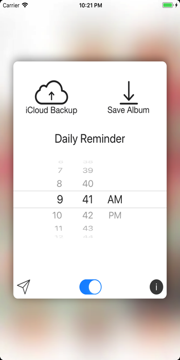

Privacy Policy
Superlapse does not collect any personal information and does not have any access to your photos. Superlapse does log important app events in order to make improvements and fix any crashes. For example: successful video rendering events, video rendering error events, successful iCloud backup events, and iCloud backup error events. The information received from these events may contain your device's version number and model along with Superlapse settings which triggered the event.